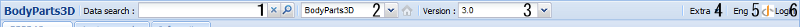
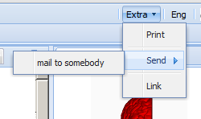

UI各部の名称と機能 > BP3DViewerタブ > ヘッダコントロール
BP3DViewerタブのヘッダコントロールは下記の構成をしています。

- Data Searchテキストボックス
Bodyparts3Dに登録されているパーツデータに対する検索を行います。
検索結果はレフトパネルのSearchタブとして追加されていきます。
- データモデル選択ドロップダウンリスト
Bodyparts3Dに登録されいるデータモデルを選択します。
現在パレットに登録されているいずれのデータとも、データモデルと異なるモデルが選択されている場合、ボタンを押すことで、パレットの先頭に登録されているデータのデータモデルを選択することが可能です。
- バージョン選択ドロップダウンリスト
各データモデルにおける、データバージョンを選択します。
- Extraボタン

- Print
現在選択しているパーツの情報を印刷するページを開きます。
- Send -> mail to somebody
現在選択しているパーツを選択した状態のURLをメールで送信します。
- Link
現在選択しているパーツを選択した状態のURLを表示します。
- 言語切り替えボタン
Jpn：日本語に切り替えます。
Eng：英語に切り替えます。
- ログインボタン
管理者用のログインボタンです。